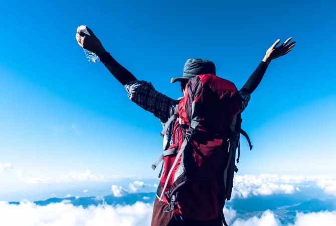
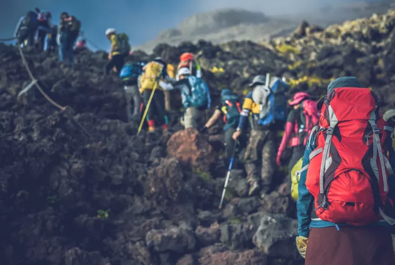
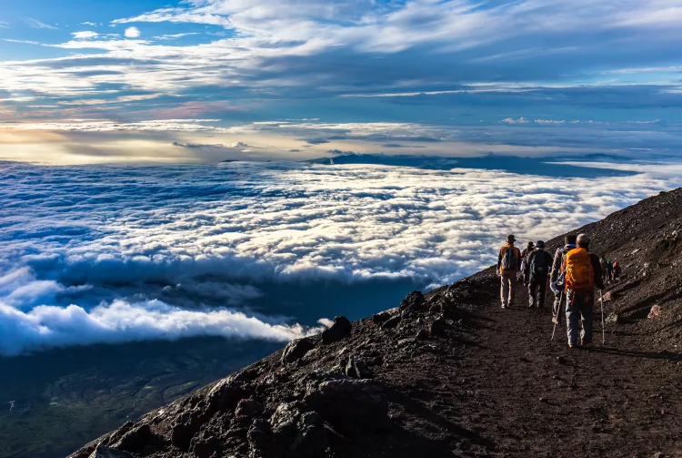

Open Japanese bathhouses, or sento, can be found within the backstreets of Japanese cities. These huge, communal tubs, comparable to onsen, are established in convention and have long been normal centers for social occasions and nearby communication. Mt. Fuji is the foremost common wall painting theme to decorate sento dividers. Called penki-e, these wall paintings are ordinarily repainted at least once a year and grandstand Mt. Fuji totally different shapes. Can't visit the genuine thing? Head to a sento and bathe at the base of the sacrosanct crest no matter where you're in Japan.
Open Japanese bathhouses, or sento, can be found within the backstreets of Japanese cities. These huge, communal tubs, comparable to onsen, are established in convention and have long been normal centers for social occasions and nearby communication. Mt. Fuji is the foremost common wall painting theme to decorate sento dividers. Called penki-e, these wall paintings are ordinarily repainted at least once a year and grandstand Mt. Fuji totally different shapes. Can't visit the genuine thing? Head to a sento and bathe at the base of the sacrosanct crest no matter where you're in Japan.
The extreme involvement is, of course, to climb Mt. Fuji . As it were open for climbing from July through early September, most trails are intensely trafficked. Total your climb at night for a rest from the summer warm. Temperatures at the different fifth station begin focuses are essentially cooler than in low-lying regions
 Scaling Mt. Fuji at night will allow you to reach the summit at dawn to experience goraiko, or worshipping of the sun. It's a befitting description as climbing Japan's most sacred and culturally significant mountain is an unforgettable encounter.
